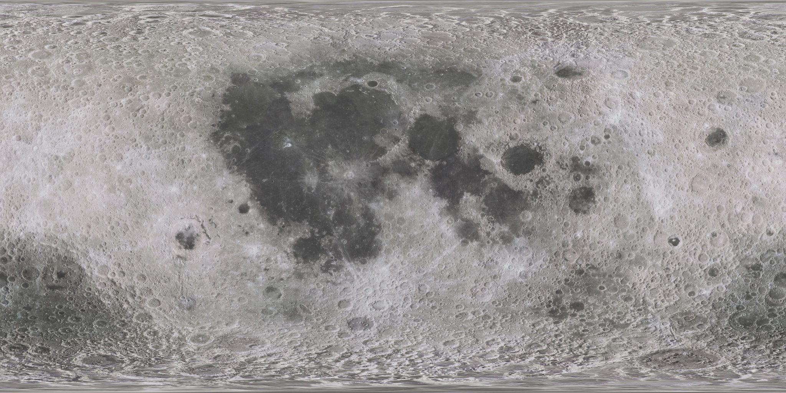

What it takes to put the Moon online
A base at the lunar South Pole needs what any town needs: a connection, a map and a clock. These are NASA's own numbers for each, phase by phase.
Every figure carries a tag for its source, like T2 for a table in SCaN's demand signal or UG 4 for a page of the Moon Base User's Guide. Select any tag to see its source. Pick a phase in the bar above.

Drag to turn it. The service region and its height are to scale. Site positions, relay orbits and relay counts are schematic, because the paper sets coverage targets, not a constellation design. Older relay requirements start the first zone at 80° S: see how the relays arrive.
Dates follow the SCaN paper. NASA's phases page, updated four days earlier, says now to 2029, 2029 to 2032 and 2032 onward. Where the sources disagree
Traffic
Why the network has to grow: more flights, and far more mass on the ground. Every lander, rover and habitat is another user that needs a link, a position and the time.
Payload to the surface, per phase UG 4
Launches and landings UG 4
Crew on the Moon UG 4
Talk
How much data has to move between the Moon and Earth, and over which links. Early missions talk straight to Earth. Relays in lunar orbit take over as they come online.
Peak real-time throughput T2
Availability T2
Users online at once T2
Data per day T2
What Phase 1 is supposed to deliver UG 8
The links themselves
See
Cameras and sensors in orbit map the ground before anyone lands and keep watching after. The South Pole is hard to image: low sun, long shadows, craters that never see daylight.
Sharpness T4
How often it looks again T4
Also on the list T4
The base it serves
The network exists for everything else at the base. These are the guide's Phase 1 targets for the systems that will depend on it, and the place they have to work.
The place UG 7
Phase 1 targets, by system UG 8–10
Build
The paper ends with the gaps NASA expects companies to help close. Its advice: watch the SCaN website and SAM.gov for upcoming opportunities.
What a security engineer notices
Relays that cannot read your data, a navigation signal that has to prove itself, and why custody matters. My notes, from a career in financial-services security.